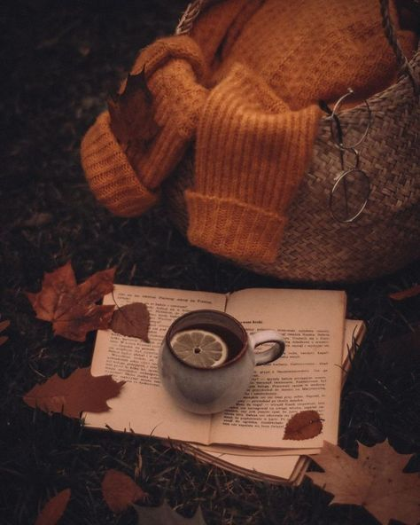

You may not think that the season of autumn is significantly "special" or "different" from the others. However, it's one of the only seasons one can wrap a warm blanket around themselves, and curl up to read for hours on end.
Nothing feels more like a fall day than cozying up in an oversized sweater, with a book in one hand and a mug of steaming in tea in the other.
A great place to look at book reccomendations and fall reading lists is Goodreads.com.
Goodreads is a wonderful resource when looking to build your TBR list, and even offers reccomendations based off your favorite books or genres. Currently, the website has it's annual "Anticipated New Fall Releases" list. It also offers a "Dark Academia" and even "Pulitzer Prize Winners" list, if you would like to delve into different literary genres or award-winning novels.
Just begin by grabbing a scrap piece of paper, a new google doc, or even create a Goodreads account, which easily helps to keep track of books you want to read, or ones you've already read. Start with asking around at libraries or people you know, searching for book recomendations on websites, or watching YouTube videos to get you started.
After that, all you have to do is cozy up with a blanket, some tea or coffee, and start reading a book from your new fall reading list!